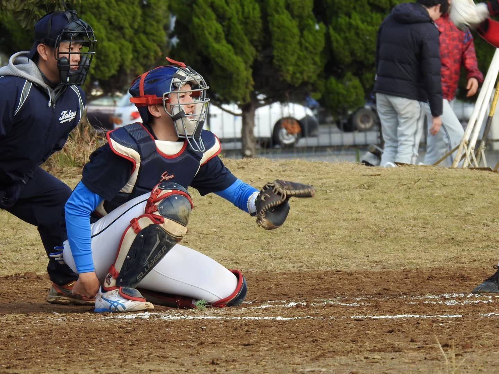
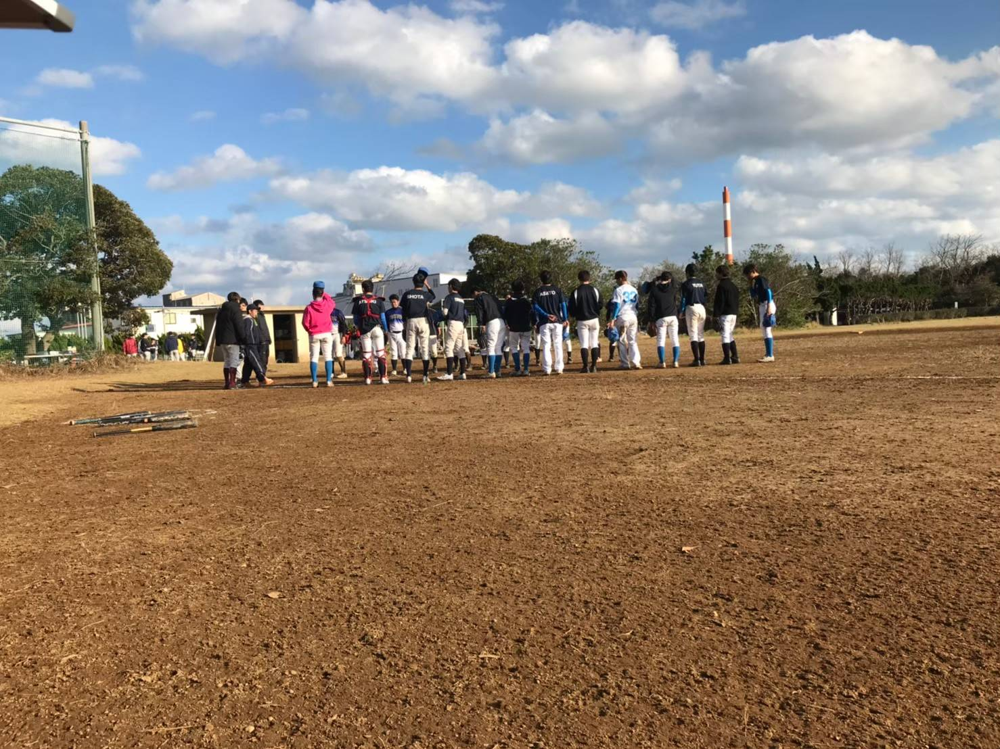
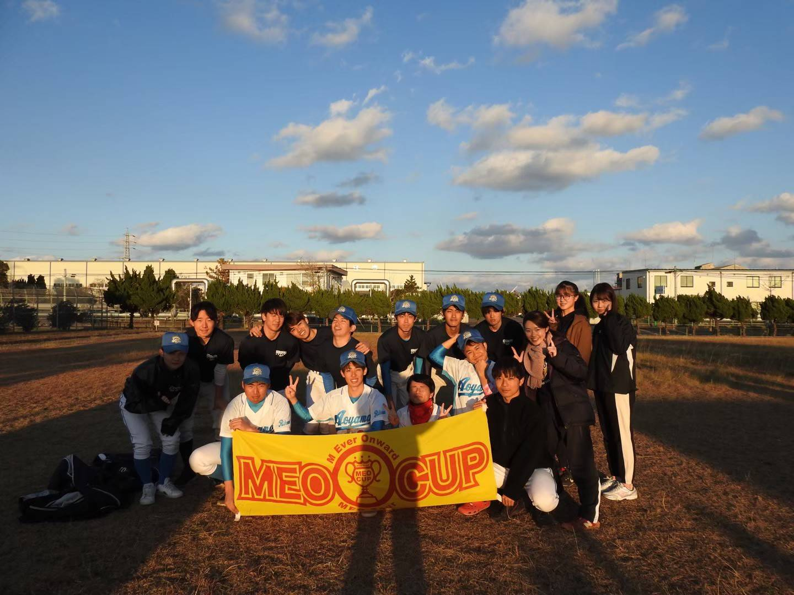
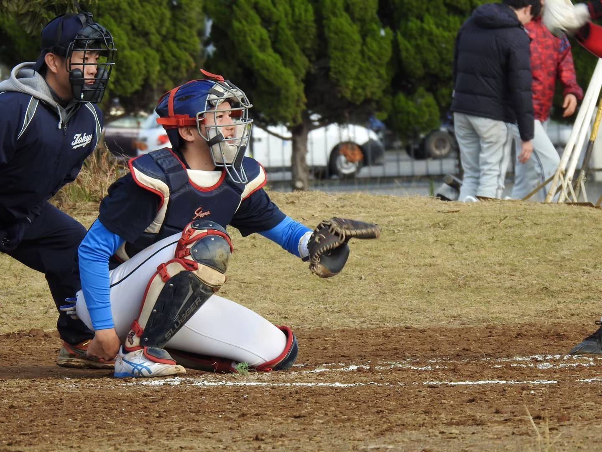
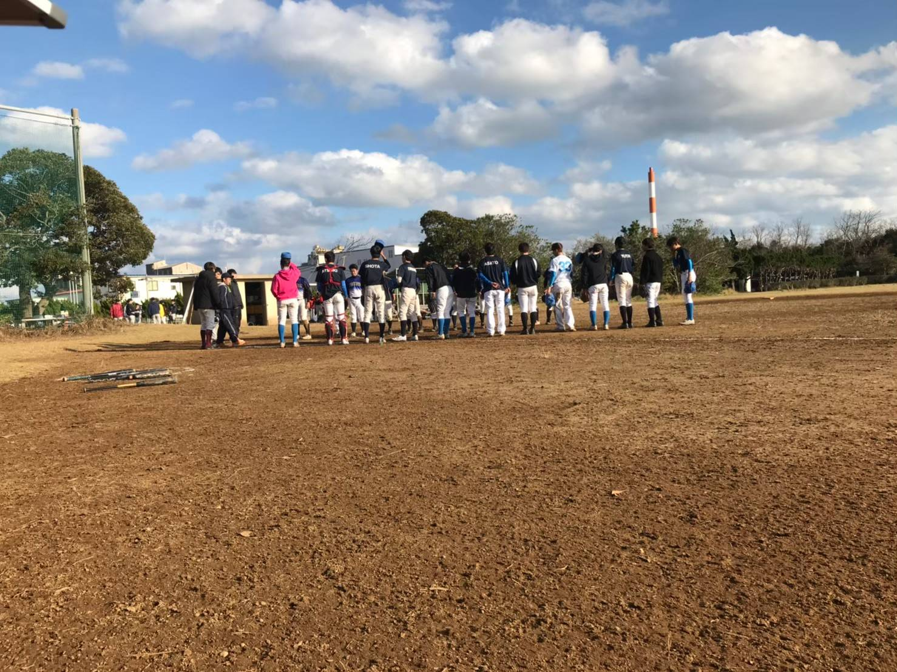
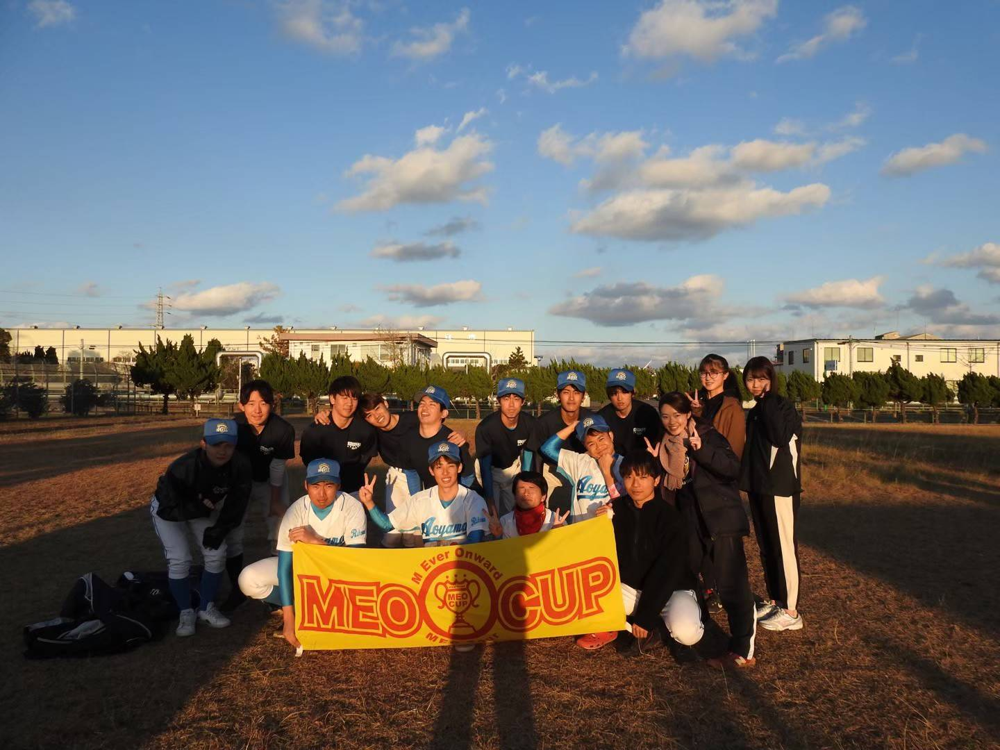

FAQ
全体
Q. どれくらいの頻度で活動していますか？
基本的には週２日程度です。平日１日、土日１日がだいたいですが、公式戦や練習試合があると多少変わります。 練習時間は午前、午後、夜間(17時～21時くらい)のいずれかで、約４時間程度です。丸１日やることはほぼありません。
Q. 部費はいくらかかりますか？
部費は１年単位で2020年は、選手￥15000,マネ￥5000でした。基本大きな変動はありません。
Q. 合宿は行われますか？
コロナの影響で2020年は行われませんでしたが、通常は年に２～３回ほど行われます。 合宿では大会に参加したり、いつもと違う場所でちょっと長めに練習したりします。 過去には雨天時に体育館を借りて別のスポーツ(バスケ、バレーなど)をしたこともありました。
 





Q. 兼サーしている人はいますか？
全然います！もちろんここだけの人もたくさんいます。
詳細はこちら
Q. どのようなリーグに所属していますか？
首都学生軟式野球連盟というところに所属しています。青山学院大学を含む６大学が所属していて、 毎年春と秋にリーグ戦をおこなっていて、２位以上でそれぞれ上部大会へつながっています。 上部大会は負けたら終わりのトーナメント方式です。
Q. 理工軟式野球部というから理工学部しか入っちゃいけないのですか？
名前はそうなっていますが、全然そんなことはありません。相模原キャンパスの他学部の人もいますし、 青山キャンパスの学部の人もいます。
Q. バイトや学業と両立できますか？
基本週２程度なのでそこまで大きな影響が出ることは無いと思います。勉強に関して言えば、 様々な学部、学科の人がいるのでいろいろとサポートもしてくれるでしょう。(たぶん)
Q. どんな学部・学科の人が所属していますか？
現チームメンバーの所属状況をまとめました！
詳細はこちら
Q. 上下関係は厳しいですか？
部活とサークルの中間くらいの立ち位置なのでとくにそういったことはありません。 学年問わず仲良くやってます！
Q. 練習に参加してみたいのですが、どうすればいいですか？
理工軟式野球部の公式アカウント(Twitter,Instagram)または、CONTACTページがあるので、そちらで連絡してみてください。
選手
Q. 野球未経験なのですが、大丈夫でしょうか？
ぜんぜん大丈夫です。初心者から高校野球経験者まで様々な人がいます。
Q. 初心者ってどれくらいいますか？
毎年一人二人程度です。いない年もあります。
Q. 初心者なのですが、道具一式揃えるにはどれくらいの費用がかかりますか？
公式戦用のユニフォーム(上下一式)と練習着、グローブ、スパイクが最低限必要でしょう。 値段は物にもよりますが、全部新品でそろえるすると約４～５万円くらいすると思います。 ただ、以前使っていたものがあったり、友人・先輩などから譲り受けたりすればもう少し値段は 抑えられると思います。
Q. 誰でも試合に出られますか？ それともレギュラーが固定されていますか？
練習試合はなるべく多くの選手が出られるようなかたちをとりますが、 公式戦は勝ちにいくためのメンバーでたたかいます。
マネージャー
Q. マネージャーは募集していますか？
大募集中です‼️マネージャー志望大歓迎です!!
野球を全く知らない方、マネージャー経験0の方でも大丈夫です！少しでも興味がある方は1度体験に来てくれたら嬉しいです！
Q. マネージャーの仕事内容が知りたいです。
・スコア記録
・球出し、球拾い
・アイシング補助
・練習道具準備
・ボール磨き
・怪我の処置
Q. マネージャーの役割、やりがいを教えてください。
試合中ベンチに入ってスコアを書いたり選手のサポートをします。ベンチに必ず入ってもらうのでスタンドから 見るのとは全く違ったものが見えると思います。プレーヤーと同じ目線で野球が見れるので、選手と一緒に感動が味わえます。 また、試合や練習で選手の成長する姿を間近で見られるのはマネージャーの特権だと思います‼️
Q. 現役マネージャーの人数
５人です。 参考はこちら
Q. 中高で何部だったか
軽音部、バスケ部、演劇部、茶道部と様々です。
Q. 入部した理由
・野球特にプロ野球が好き
・野球に関わる部活に入りたい
・サポートする側の経験を積みたかったから
・マネージャーへの憧れ
・りこなんへの一目惚れ